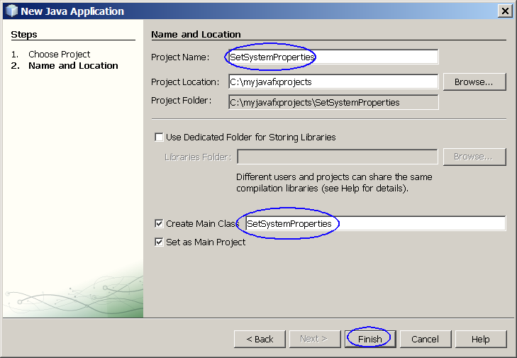

Tour of java.lang.* and java.util.*
classes

This hands-on lab takes you through the important classes of
java.lang.* and java.util.* packages.
Expected duration: 80 minutes
Software Needed
Before you begin, you need to install required software (JDK and
NetBeans IDE) on your
computer as
described
here. Also download and unzip the hands-on lab file mentioned
below.
- 1010_javalang.zip (download)
- It contains this document and the lab contents
- Download it and unzip in a directory of your choice
Change Log
- Feb 27th, 2007: Homework is added
- Sep. 13th, 2007: Some correction is made
- Jan. 10th, 2009: NetBeans 6.5 is used
Lab Exercises
Exercise 1: Boolean class, Various data
types, Date class, Math class
In this exercise, you are going to use
various classes.
- Boolean class
- Various data types
- Date class
- Math class
(1.1)
BooleanWrapper
1. Create a new NetBeans project
- Select File->New Project (Ctrl+Shift+N). The New Project dialog box appears.
- Under Choose Project
pane,
select Java under Categories and Java Application under Projects.
- Click Next.
- Under Name and Location
pane, for the Project Name
field, type in BooleanWrapper as
project name.
- For Create Main Class
field, type in BooleanWrapper.
- Click Finish.
- Observe that BooleanWrapper project
appears and IDE generated BooleanWrapper.java
is displayed in the source editor window of NetBeans IDE.
2. Modify the IDE generated
BooleanWrapper.java
as shown in Code-1.121 below.
class BooleanWrapper {
public static void main(String args[]) {
boolean booleanVar = 1>2;
Boolean
booleanObj = new Boolean("TRue");
/* primitive to object; can also use
valueOf
method */
Boolean
booleanObj2 = new
Boolean(booleanVar);
System.out.println("booleanVar = " +
booleanVar);
System.out.println("booleanObj = " +
booleanObj);
System.out.println("booleanObj2 = "
+
booleanObj2);
System.out.println("compare 2 wrapper
objects: "
+ booleanObj.equals(booleanObj2));
/* object to primitive */
booleanVar = booleanObj.booleanValue();
System.out.println("booleanVar = " +
booleanVar);
}
}
|
Code-1.11: BooleanWrapper.java
3. Build and run the project
- Right click BooleanWrapper project
and select Run.
- Observe the result in the Output
window.
(Figure-1.12 below)
booleanVar = false
booleanObj = true
booleanObj2 = false
compare 2 wrapper objects: false
booleanVar = true
|
Figure-1.12: Result of running BooleanWrapper application
Solution:
This exercise up to this point is provided as a ready-to-open-and-run
NetBeans project as part of hands-on lab zip file. You can find it as
<LAB_UNZIPPED_DIRECTORY>/javalang/samples/BooleanWrapper.
You can just open it and run it.
return to top of the exercise
(1.2)
Various data types
1. Create a new NetBeans project
- Select File->New Project (Ctrl+Shift+N). The New Project dialog box appears.
- Under Choose Project
pane,
select Java under Categories and Java Application under Projects. Click Next.
- Under Name and Location
pane, for the Project Name
field, type in DataTypePrintTest as
project name.
- For Create Main Class
field, type in DataTypePrintTest.
- Click Finish.
- Observe that DataTypePrintTest project
appears and IDE generated DataTypePrintTest.java
is displayed in the source editor window of NetBeans IDE.
2. Modify the IDE generated
DataTypePrintTest.java
as shown in Code-1.21 below.
public class DataTypePrintTest {
public static void main(String[] args) {
Thread objectData = new
Thread();
String stringData = "Java
Mania";
char[] charArrayData = {
'a', 'b', 'c' };
int integerData = 4;
long longData =
Long.MIN_VALUE;
float floatData =
Float.MAX_VALUE;
double doubleData = Math.PI;
boolean booleanData = true;
System.out.println(objectData);
System.out.println(stringData);
System.out.println(charArrayData);
System.out.println(integerData);
System.out.println(longData);
System.out.println(floatData);
System.out.println(doubleData);
System.out.println(booleanData);
}
}
|
Code-1.21: DataTypePrintTest.java
3. Build and run the project
- Right click DataTypePrintTest project
and select Run.
- Observe the result in the Output
window.
(Figure-1.22 below)
Thread[Thread-0,5,main]
Java Mania
abc
4
-9223372036854775808
3.4028235E38
3.141592653589793
true
|
Figure-1.22: Result of running DataTypePrintTest application
Solution:
This exercise up to this point is provided as a ready-to-open-and-run
NetBeans project as part of hands-on lab zip file. You can find it as
<LAB_UNZIPPED_DIRECTORY>/javalang/samples/DataTypePrintTest.
You can just open it and run it.
return to top of the exercise
(1.3)
Date class
1. Create a new NetBeans project
- Select File->New Project (Ctrl+Shift+N). The New Project dialog box appears.
- Under Choose Project
pane,
select Java under Categories and Java Application under Projects. Click Next.
- Under Name and Location
pane, for the Project Name
field, type in DateTest as
project name.
- For Create Main Class
field, type in DateTest.
- Click Finish.
- Observe that DateTest project
appears and IDE generated DateTest.java
is displayed in the source editor window of NetBeans IDE.
2. Modify the IDE generated
DateTest.java
as shown in Code-1.31 below. Study the code by paying
special attention to the bold fonted parts.
import java.util.Date;
public class DateTest {
public static void main(String[] args) {
// Return the number of milliseconds in the Date
// as a long, using the getTime() method
Date d1 = new Date();
// timed code goes here
for (int i=0; i<10000000;
i++) { int j = i;}
Date d2 = new Date();
long elapsed_time =
d2.getTime() - d1.getTime();
System.out.println("That
took " + elapsed_time
+ " milliseconds");
}
}
|
Code-1.31: DateTest.java
3. Build and run the project
- Right click DateTest project
and select Run.
- Observe the result in the Output
window.
(Figure-1.32 below)
That took 15 milliseconds
|
Figure-1.32: Result of running DateTest application
Solution:
This exercise up to this point is provided as a ready-to-open-and-run
NetBeans project as part of hands-on lab zip file. You can find it as
<LAB_UNZIPPED_DIRECTORY>/javalang/samples/DateTest.
You can just open it and run it.
return to top of the exercise
(1.4)
Math class
1. Create a new NetBeans project
- Select File->New Project (Ctrl+Shift+N). The New Project dialog box appears.
- Under Choose Project
pane,
select Java under Categories and Java Application under Projects.
- Click Next.
- Under Name and Location
pane, for the Project Name
field, type in MathDemo as
project name.
- For Create Main Class
field, type in MathDemo.
- Click Finish.
- Observe that MathDemo project
appears and IDE generated MathDemo.java
is displayed in the source editor window of NetBeans IDE.
2. Modify the IDE generated
MathDemo.java
as shown in Code-1.41 below.
class MathDemo {
public static void main(String args[]) {
System.out.println("absolute
value of -5: " + Math.abs(-5));
System.out.println("absolute
value of 5: " + Math.abs(5));
System.out.println("random
number(max is 10): " +
Math.random()*10);
System.out.println("max of
3.5 and 1.2: " +
Math.max(3.5,1.2));
System.out.println("min of
3.5 and 1.2: " +
Math.min(3.5,1.2));
System.out.println("ceiling
of 3.5: " +
Math.ceil(3.5));
System.out.println("floor of
3.5: " +
Math.floor(3.5));
System.out.println("e raised
to 1: " +
Math.exp(1));
System.out.println("log 10:
" + Math.log(10));
System.out.println("10
raised to 3: " +
Math.pow(10,3));
System.out.println("rounded
off value of pi: " +
Math.round(Math.PI));
System.out.println("square
root of 5 = " +
Math.sqrt(5));
System.out.println("10
radian = " +
Math.toDegrees(10) + "
degrees");
System.out.println("sin(90):
" +
Math.sin(Math.toRadians(90)));
}
}
|
Code-1.41: MathDemo.java
3. Build and run the project
- Right click MathDemo project
and select Run.
- Observe the result in the Output
window.
(Figure-1.42 below)
absolute value of -5: 5
absolute value of 5: 5
random number(max is 10): 5.992489039705273
max of 3.5 and 1.2: 3.5
min of 3.5 and 1.2: 1.2
ceiling of 3.5: 4.0
floor of 3.5: 3.0
e raised to 1: 2.7182818284590455
log 10: 2.302585092994046
10 raised to 3: 1000.0
rounded off value of pi: 3
square root of 5 = 2.23606797749979
10 radian = 572.9577951308232 degrees
sin(90): 1.0
|
Figure-1.42: Result of running MathDemo application
Solution:
This exercise up to this point is provided as a ready-to-open-and-run
NetBeans project as part of hands-on lab zip file. You can find it as
<LAB_UNZIPPED_DIRECTORY>/javalang/samples/MathDemo.
You can just open it and run it.
return to top of the exercise
Summary
In this exercise, you have built and run
Java applications that use the Boolean class, the Date class, the Math
class, and various data types found in the java.lang.* package.
return to the top
Exercise 2: System Properties
(2.1)
Display user name property
1. Create a new NetBeans project
- Select File->New Project (Ctrl+Shift+N). The New Project dialog box appears.
- Under Choose Project
pane,
select Java under Categories and Java Application under Projects.
- Click Next.
- Under Name and Location
pane, for the Project Name
field, type in UserNameTest as
project name.
- For Create Main Class
field, type in UserNameTest.
- Click Finish.
Figure-2.21: New Java Application dialog box
- Observe that UserNameTest project
appears and IDE generated UserNameTest.java
is displayed in the source editor window of NetBeans IDE.
2. Modify the IDE generated
UserNameTest.java
as shown in Code-2.22 below. Study the code by paying
special attention to the bold fonted parts.
public class UserNameTest {
public static void main(String[] args) {
String name =
System.getProperty("user.name");
System.out.println("user.name property = " + name);
}
}
|
Code-2.22: UserNameTest.java
3. Build and run the project
- Right click UserNameTest project
and select Run.
- Observe the result in the Output
window.
(Figure-2.23 below)
user.name property = sang
|
Figure-2.23: Result of running UserNameTest application
Solution:
This exercise up to this point is provided as a ready-to-open-and-run
NetBeans project as part of hands-on lab zip file. You can find it as
<LAB_UNZIPPED_DIRECTORY>/javalang/samples/UserNameTest.
You can just open it and run it.
return to top of the exercise
(2.2)
Display system properties
1. Create a new NetBeans project
- Select File->New Project (Ctrl+Shift+N). The New Project dialog box appears.
- Under Choose Project
pane,
select Java under Categories and Java Application under Projects.
- Click Next.
- Under Name and Location
pane, for the Project Name
field, type in DisplaySystemProps as
project name.
- For Create Main Class
field, type in DisplaySystemProps.
- Click Finish.
- Observe that DisplaySystemProps
project
appears and IDE generated DisplaySystemProps.java
is displayed in the source editor window of NetBeans IDE.
2. Modify the IDE generated
DisplaySystemProps.java
as shown in Code-2.21 below. Study the code by paying
special attention to the bold fonted parts.
import java.util.Properties;
public class DisplaySystemProps {
public static void main(String[] args) {
// Get all system properties and display them.
Properties p1 = System.getProperties();
p1.list(System.out);
}
}
|
Code-2.21: DisplaySystemProps.java
3. Build and run the project
- Right click DisplaySystemProps project
and select Run.
- Observe the result in the Output
window.
(Figure-2.22 below)
-- listing properties --
java.runtime.name=Java(TM) 2 Runtime Environment, Stand...
sun.boot.library.path=C:\Program Files\Java\jdk1.5.0_06\jre...
java.vm.version=1.5.0_06-b05
java.vm.vendor=Sun Microsystems Inc.
java.vendor.url=http://java.sun.com/
path.separator=;
java.vm.name=Java HotSpot(TM) Client VM
file.encoding.pkg=sun.io
user.country=US
sun.os.patch.level=Service Pack 2
java.vm.specification.name=Java Virtual Machine Specification
user.dir=C:\handson2\development\javalang\samp...
java.runtime.version=1.5.0_06-b05
java.awt.graphicsenv=sun.awt.Win32GraphicsEnvironment
java.endorsed.dirs=C:\Program Files\Java\jdk1.5.0_06\jre...
os.arch=x86
java.io.tmpdir=C:\DOCUME~1\sang\LOCALS~1\Temp\
line.separator=
java.vm.specification.vendor=Sun Microsystems Inc.
user.variant=
os.name=Windows XP
sun.jnu.encoding=Cp1252
java.library.path=C:\Program Files\Java\jdk1.5.0_06\jre...
java.specification.name=Java Platform API Specification
java.class.version=49.0
sun.management.compiler=HotSpot Client Compiler
os.version=5.1
user.home=C:\Documents and Settings\sang
user.timezone=
java.awt.printerjob=sun.awt.windows.WPrinterJob
file.encoding=Cp1252
java.specification.version=1.5
user.name=sang
java.class.path=C:\handson2\development\javalang\samp...
java.vm.specification.version=1.0
sun.arch.data.model=32
java.home=C:\Program Files\Java\jdk1.5.0_06\jre
java.specification.vendor=Sun Microsystems Inc.
user.language=en
awt.toolkit=sun.awt.windows.WToolkit
java.vm.info=mixed mode, sharing
java.version=1.5.0_06
java.ext.dirs=C:\Program Files\Java\jdk1.5.0_06\jre...
sun.boot.class.path=C:\Program Files\Java\jdk1.5.0_06\jre...
java.vendor=Sun Microsystems Inc.
file.separator=\
java.vendor.url.bug=http://java.sun.com/cgi-bin/bugreport...
sun.cpu.endian=little
sun.io.unicode.encoding=UnicodeLittle
sun.desktop=windows
sun.cpu.isalist=
|
Figure-2.22: Result of running DisplaySystemProps application
Solution:
This exercise up to this point is provided as a ready-to-open-and-run
NetBeans project as part of hands-on lab zip file. You can find it as
<LAB_UNZIPPED_DIRECTORY>/javalang/samples/DisplaySystemProps.
You can just open it and run it.
(2.3)
Set System properties
1. Create a new NetBeans project
- Select File->New Project (Ctrl+Shift+N). The New Project dialog box appears.
- Under Choose Project
pane,
select Java under Categories and Java Application under Projects.
- Click Next.
- Under Name and Location
pane, for the Project Name
field, type in SetSystemProperties as
project name.
- For Create Main Class
field, type in SetSystemProperties.
- Click Finish.

Figure-2.31: New Java Application
- Observe that SetSystemProperties
project
appears and IDE generated SetSystemProperties.java
is displayed in the source editor window of NetBeans IDE.
2. Modify the IDE generated
SetSystemProperties.java
as shown in Code-2.32 below. Study the code by paying
special attention to the bold fonted parts.
import java.io.FileInputStream;
import java.util.Properties;
public class SetSystemProperties {
public static void main(String[] args) throws
Exception {
// set up new properties
object
// from file
"myProperties.txt"
FileInputStream propFile =
new FileInputStream(
"myProperties.txt");
Properties p = new
Properties(System.getProperties());
p.load(propFile);
// set a property through
setProperty() method
p.setProperty("myKey1",
"myValue1");
// set the system properties
System.setProperties(p);
// display new properties
System.getProperties().list(System.out);
}
}
|
Code-2.32: SetSystemProperties.java
You will experience compile error as shown below. This is
expected.
Figure-2.33: SetSystemProperties
3. Provide
myProperties.txt as
an input file.
- Right click SetSystemProperties
project
and select New->Other.
Figure-2.34: New->Other
- Observe the New File
dialog box appears.
- Choose Other under Categories and Empty File under File Types. (Figure-2.35 below)
Figure-2.35: Create Empty File
- Observe that the New Empty File
dialog box appears.
- For the File Name field,
type in myProperties.txt.
- Observe that the empty
myProperties.txt appears in the editor window.
- Cut and paste the contents from the input file (File-2.36) below
to the
empty file.
subliminal.message=Buy Java Now!
myown.property=Life is worth living with Passion!
|
File-2.36: myProperties.txt
4. Build and run the project
- Right click SetSystemProperties
project
and select Run.
- Observe the result in the Output
window.
(Figure-2.37 below)
-- listing properties --
java.runtime.name=Java(TM) 2 Runtime Environment, Stand...
sun.boot.library.path=C:\Program Files\Java\jdk1.5.0_06\jre...
java.vm.version=1.5.0_06-b05
java.vm.vendor=Sun Microsystems Inc.
java.vendor.url=http://java.sun.com/
path.separator=;
java.vm.name=Java HotSpot(TM) Client VM
file.encoding.pkg=sun.io
user.country=US
sun.os.patch.level=Service Pack 2
java.vm.specification.name=Java Virtual Machine Specification
user.dir=C:\handson2\development\javalang\samp...
java.runtime.version=1.5.0_06-b05
java.awt.graphicsenv=sun.awt.Win32GraphicsEnvironment
java.endorsed.dirs=C:\Program Files\Java\jdk1.5.0_06\jre...
os.arch=x86
java.io.tmpdir=C:\DOCUME~1\sang\LOCALS~1\Temp\
line.separator=
java.vm.specification.vendor=Sun Microsystems Inc.
user.variant=
os.name=Windows XP
myown.property=Life is worth
living with Passion!
sun.jnu.encoding=Cp1252
subliminal.message=Buy Java Now!
java.library.path=C:\Program Files\Java\jdk1.5.0_06\jre...
java.specification.name=Java Platform API Specification
java.class.version=49.0
sun.management.compiler=HotSpot Client Compiler
os.version=5.1
user.home=C:\Documents and Settings\sang
user.timezone=
java.awt.printerjob=sun.awt.windows.WPrinterJob
file.encoding=Cp1252
java.specification.version=1.5
user.name=sang
java.class.path=C:\handson2\development\javalang\samp...
java.vm.specification.version=1.0
sun.arch.data.model=32
java.home=C:\Program Files\Java\jdk1.5.0_06\jre
java.specification.vendor=Sun Microsystems Inc.
user.language=en
awt.toolkit=sun.awt.windows.WToolkit
java.vm.info=mixed mode, sharing
java.version=1.5.0_06
java.ext.dirs=C:\Program Files\Java\jdk1.5.0_06\jre...
sun.boot.class.path=C:\Program Files\Java\jdk1.5.0_06\jre...
java.vendor=Sun Microsystems Inc.
file.separator=\
java.vendor.url.bug=http://java.sun.com/cgi-bin/bugreport...
sun.cpu.endian=little
sun.io.unicode.encoding=UnicodeLittle
sun.desktop=windows
sun.cpu.isalist=
|
Figure-2.37: Result of running SetSystemProperties application
Solution:
This exercise up to this point is provided as a ready-to-open-and-run
NetBeans project as part of hands-on lab zip file. You can find it as
<LAB_UNZIPPED_DIRECTORY>/javalang/samples/SetSystemProperties.
You can just open it and run it.
return to top of the exercise
Exercise 3: System class
In this exercise, you are going to run
various methods of the System class.
(3.1)
Call methods of the System class
1. Create a new NetBeans project
- Select File->New Project (Ctrl+Shift+N). The New Project dialog box appears.
- Under Choose Project
pane,
select Java under Categories and Java Application under Projects. Click Next.
- Under Name and Location
pane, for the Project Name
field, type in SystemClass as
project name.
- For Create Main Class
field, type in SystemClass.
- Click Finish.
- Observe that SystemClass project
appears and IDE generated SystemClass.java
is displayed in the source editor window of NetBeans IDE.
2. Modify the IDE generated
SystemClass.java
as shown in Code-3.11 below. Study the code by paying
special attention to the bold fonted parts.
import java.io.*;
class SystemClass {
public static void main(String args[])
throws IOException {
int arr1[] = new int[1050000];
int arr2[] = new int[1050000];
long startTime, endTime;
/* initialize arr1 */
for (int i = 0; i < arr1.length; i++)
{
arr1[i] = i + 1;
}
/* copying manually */
startTime
= System.currentTimeMillis();
for (int i = 0; i < arr1.length; i++)
{
arr2[i] = arr1[i];
}
endTime = System.currentTimeMillis();
System.out.println("Time for manual
copy: " +
(endTime-startTime) + " ms.");
/* using the copy utility provided by
java */
startTime = System.currentTimeMillis();
System.arraycopy(arr1, 0, arr2, 0,
arr1.length);
endTime = System.currentTimeMillis();
System.out.println("Time for copy
utility provided: " +
(endTime-startTime) + " ms.");
System.gc(); //request garbage collector to work
System.exit(0);
}
}
|
Code-3.11: SystemClass.java
3. Build and run the project
- Right click SystemClass project
and select Run.
- Observe the result in the Output
window.
(Figure-3.12 below)
Time for manual copy: 44 ms.
Time for copy utility provided: 5 ms.
|
Figure-3.12: Result of running SystemClass application
Solution:
This exercise up to this point is provided as a ready-to-open-and-run
NetBeans project as part of hands-on lab zip file. You can find it as
<LAB_UNZIPPED_DIRECTORY>/javalang/samples/SystemClass.
You can just open it and run it.
return to top of the exercise
(3.2)
Get environment variables
1. Create a new NetBeans project
- Select File->New Project (Ctrl+Shift+N). The New Project dialog box appears.
- Under Choose Project
pane,
select Java under Categories and Java Application under Projects. Click Next.
- Under Name and Location
pane, for the Project Name
field, type in SystemClass2 as
project name.
- For Create Main Class
field, type in SystemClass2.
- Click Finish.
- Observe that SystemClass2 project
appears and IDE generated SystemClass2.java
is displayed in the source editor window of NetBeans IDE.
2. Modify the IDE generated
SystemClass2.java
as shown in Code-3.21 below. Study the code by paying
special attention to the bold fonted parts.
import java.util.Map;
class SystemClass2 {
public static void main(String args[]){
Map
m1 = System.getenv();
System.out.println("System
environment variables = " + m1);
}
}
|
Code-3.21: SystemClass2.java
3. Build and run the project
- Right click SystemClass2 project
and select Run.
- Observe the result in the Output
window.
(Figure-3.22 below)
System environment variables =
{PROCESSOR_ARCHITECTURE=x86, LOGONSERVER=\\PASSION2, HOMEDRIVE=C:,
HOMEPATH=\Documents and Settings\sang, SESSIONNAME=Console,
TMP=C:\DOCUME~1\sang\LOCALS~1\Temp, windir=C:\WINDOWS,
PROCESSOR_IDENTIFIER=x86 Family 15 Model 72 Stepping 2, AuthenticAMD,
SystemDrive=C:, USERPROFILE=C:\Documents and Settings\sang,
PATHEXT=.COM;.EXE;.BAT;.CMD;.VBS;.VBE;.JS;.JSE;.WSF;.WSH,
CommonProgramFiles=C:\Program Files\Common Files, =::=::\,
NUMBER_OF_PROCESSORS=2, ComSpec=C:\WINDOWS\system32\cmd.exe,
COMPUTERNAME=PASSION2, OS=Windows_NT, USERNAME=sang,
TEMP=C:\DOCUME~1\sang\LOCALS~1\Temp, USERDOMAIN=PASSION2,
ALLUSERSPROFILE=C:\Documents and Settings\All Users,
PROCESSOR_LEVEL=15, SystemRoot=C:\WINDOWS, APPDATA=C:\Documents and
Settings\sang\Application Data,
Path=d:\bin;c:\bin;C:\WINDOWS\system32;C:\WINDOWS;C:\WINDOWS\System32\Wbem;C:\Program
Files\ATI Technologies\ATI.ACE\;"C:\Program
Files\Java\jdk1.5.0_06"\bin;c:\cygwin\bin;C:\Sun\AppServer9\bin;;C:\PROGRA~1\COMMON~1\MUVEET~1\030625,
JAVA_HOME="C:\Program Files\Java\jdk1.5.0_06", FP_NO_HOST_CHECK=NO,
PROCESSOR_REVISION=4802, ProgramFiles=C:\Program Files}
|
Figure-3.22: Result of running SystemClass2 application
Solution:
This exercise up to this point is provided as a ready-to-open-and-run
NetBeans project as part of hands-on lab zip file. You can find it as
<LAB_UNZIPPED_DIRECTORY>/javalang/samples/SystemClass2.
You can just open it and run it.
Summary
In this exercise, you have learned how to invoke methods of System
class.
return
to the top
Exercise 4: Runtime class
In this exercise, you are going to run
OS specific programs using Runtime class.
(4.1)
Run OS specific program
1. Create a new NetBeans project
- Select File->New Project (Ctrl+Shift+N). The New Project dialog box appears.
- Under Choose Project
pane,
select Java under Categories and Java Application under Projects. Click Next.
- Under Name and Location
pane, for the Project Name
field, type in RunOSProgram as
project name.
- For Create Main Class
field, type in RunOSProgram.
- Click Finish.
- Observe that RunOSProgram project
appears and IDE generated RunOSProgram.java
is displayed in the source editor window of NetBeans IDE.
2. Modify the IDE generated
RunOSProgram.java
as shown in Code-4.11 below. Study the code by paying
special attention to the bold fonted parts.
class RunOSProgram {
public static void main(String args[]) {
Runtime rt = Runtime.getRuntime();
Process proc;
try {
if
(System.getProperty("os.name").startsWith("Windows")){
// Run a OS specific program
proc = rt.exec("notepad");
}
else{
proc = rt.exec("gedit");
}
proc.waitFor(); //try removing this line
} catch (Exception e) {
System.out.println("notepad is an unknown command.");
}
}
}
|
Code-4.11: RunOSProgram.java
3. Build and run the project
- Right click RunOSProgram project
and select Run.
- Observe that a OS specific program gets run. (Figure-4.12
below)
Figure-4.12: Notepad program under Windows platform gets executed
Solution:
This exercise up to this point is provided as a ready-to-open-and-run
NetBeans project as part of hands-on lab zip file. You can find it as
<LAB_UNZIPPED_DIRECTORY>/javalang/samples/RunOSProgram.
You can just open it and run it.
return to top of the exercise
(4.2)
Memory related methods of Runtime class
1. Create a new NetBeans project
- Select File->New Project (Ctrl+Shift+N). The New Project dialog box appears.
- Under Choose Project
pane,
select Java under Categories and Java Application under Projects. Click Next.
- Under Name and Location
pane, for the Project Name
field, type in RuntimeClass as
project name.
- For Create Main Class
field, type in RuntimeClass.
- Click Finish.
- Observe that RuntimeClass project
appears and IDE generated RuntimeClass.java
is displayed in the source editor window of NetBeans IDE.
2. Modify the IDE generated
RuntimeClass.java
as shown in Code-4.21 below. Study the code by paying
special attention to the bold fonted parts.
class RuntimeClass {
public static void main(String args[]) {
Runtime rt =
Runtime.getRuntime();
long maxMemory = rt.maxMemory();
long totalMemory = rt.totalMemory();
System.out.println("Maximum
amount of memory that the Java virtual machine will attempt to use = "
+ maxMemory + " bytes");
System.out.println("Total
amount of memory currently available for current and future objects,
measured in bytes = " + totalMemory + " bytes");
}
}
|
Code-4.21: RuntimeClass.java
3. Build and run the project
- Right click RuntimeClass project
and select Run.
- Observe the result in the Output
window.
(Figure-4.22 below)
Maximum amount of memory that
the Java virtual machine will attempt to use = 66650112 bytes
Total amount of memory currently available for current and future
objects, measured in bytes = 2031616 bytes
|
Figure-4.22: Result of running RuntimeClass application
Solution:
This exercise up to this point is provided as a ready-to-open-and-run
NetBeans project as part of hands-on lab zip file. You can find it as
<LAB_UNZIPPED_DIRECTORY>/javalang/samples/RuntimeClass.
You can just open it and run it.
Summary
In this exercise, you have learned how to use memory related methods of
the Runtime class.
return
to the top
Homework
exercise (for people who
are taking Sang Shin's "Java Programming online course")
1. Build a NetBeans project called
MyOwnProject performing the
following tasks.
- Write a program in which the following properties are added to a
Properties object called myProperties.
Use setProperty()
method.
- mykey20=myValue20
- mykey30=myValue30
- mykey40=myValue40
- Display the properties via list()
method.
- Zip file of the the MyOwnProject
NetBeans project. (Someone else
should be able to open and run it as a NetBeans project.) You can
use your favorite zip utility or you can use "jar" utility that comes
with JDK as following.
- cd <parent directory that contains MyOwnProject
directory>
(assuming you named your project as MyOwnProject)
- jar cvf MyOwnProject.zip MyOwnProject
(MyOwnProject should
contain nbproject directory)
- Captured output screen -
name it as JavaIntro-javalang.gif
orJavaIntro-javalang.jpg (or
JavaIntro-javalang.<whatver
graphics format>)
- Any screen capture that shows that your program is working is
good enough. No cosmetic polishment is required.
- If you decide to use
different IDE other than NetBeans, the zip
file should contain all the files that are needed for rebuilding the
project.